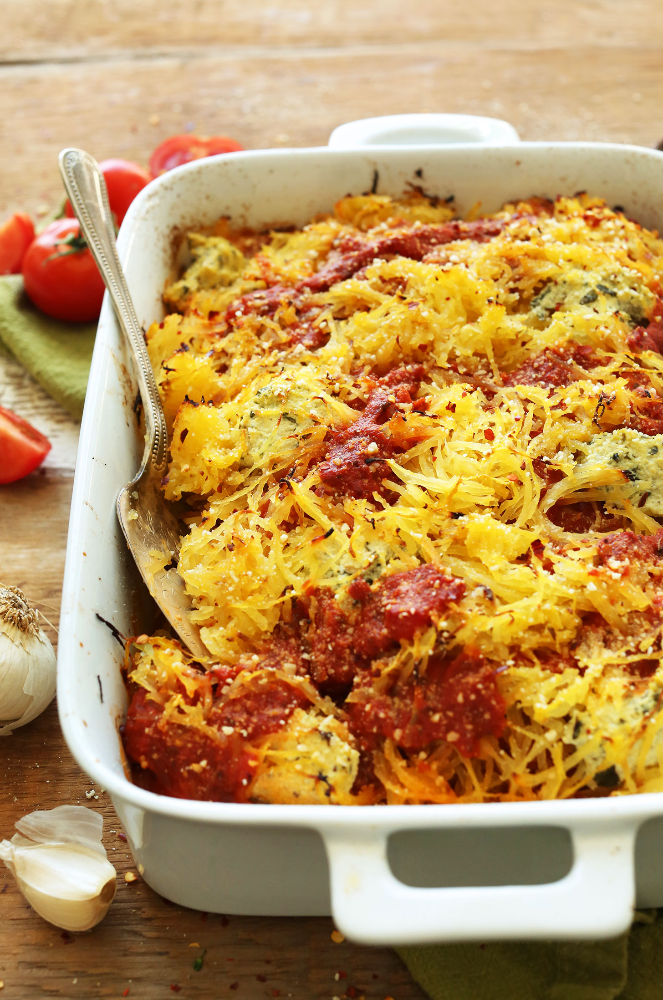

Spaghetti Squash Lasagna Bake Recipe

A different way to enjoy this squash
A savory fulfilling way to enjoy this winter squash
Ingredients
For the bake :
6-8 pounds spaghetti squash
3-4 cups Marinara sauce
for the tofu ricotta :
pinch salt & pepper
2 lemons, juiced
1 pound tofu
3 Tbsp nooch
1/2 cup fresh basil
Steps
Preheat oven to 375f
Cook spaghetti squash with method of your choice
Add all the tofu ricotta ingredients to a food processor and pulse to combine until it is a chunky puree
Lay 1/3 of your squach in a 9x13 baking dish, top with half the tofu ricotta, then a layer of marinara sauce
Repeat until all preparations are used up, making sur the top layer is the sauce
cover the dish with tinfoil and bake for 20 minutes, remove foil and bake an additional 10-15 minutes
Let cool for 15-20 minutes, and serve